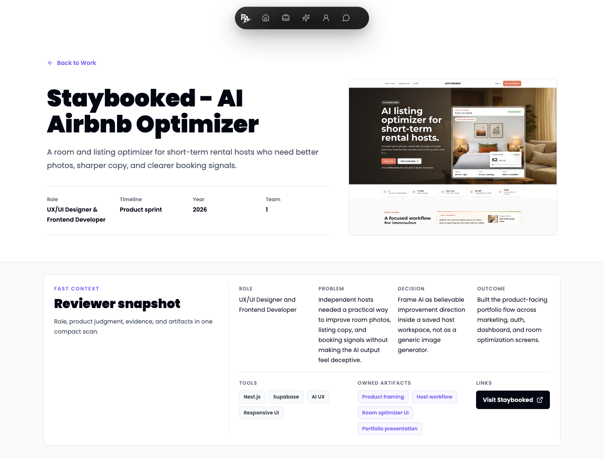
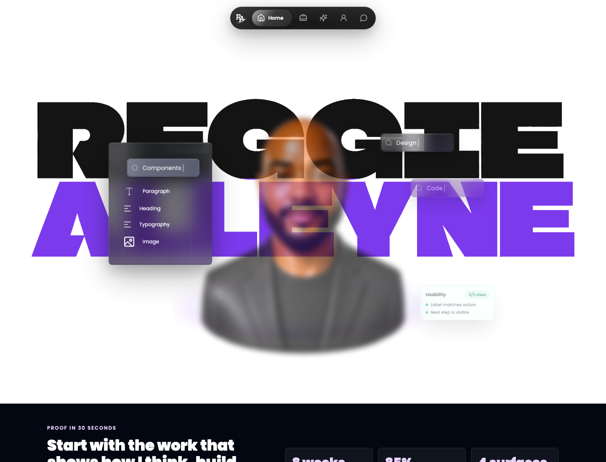
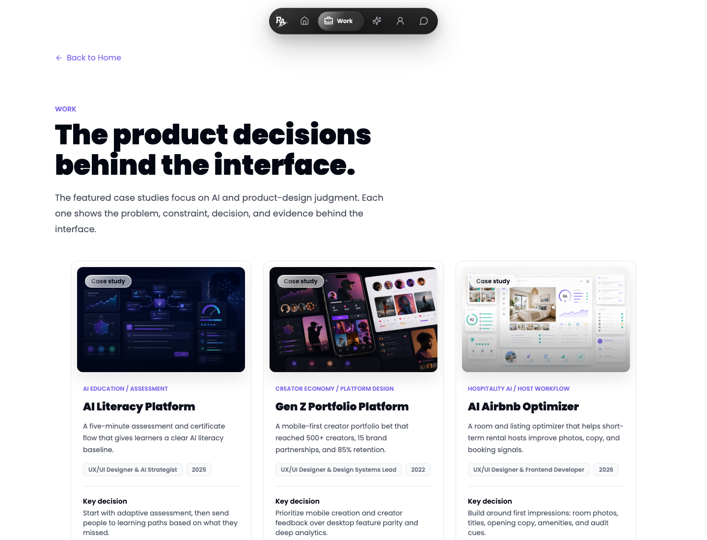
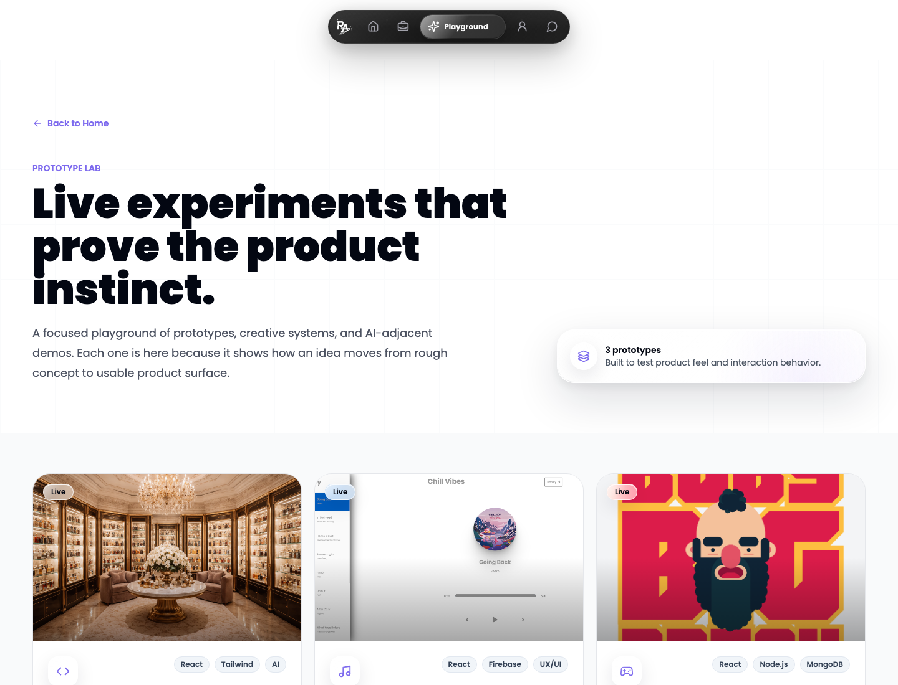
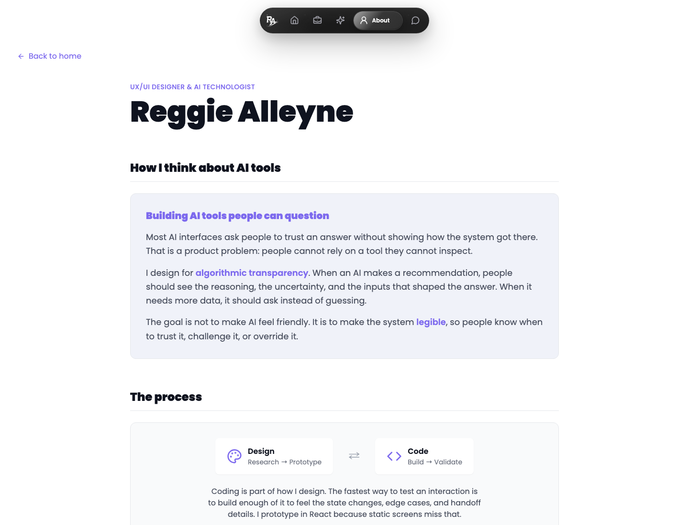
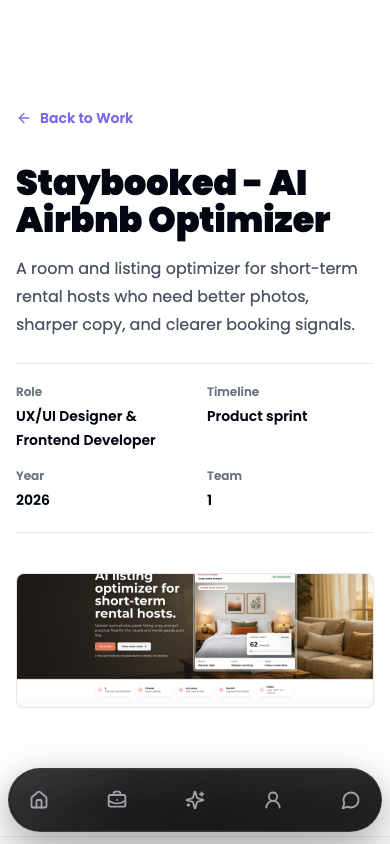

Page
#f8f9feOpen Design system
A reusable design system and guide extracted from the live portfolio. It documents the current color tokens, Poppins type scale, spacing rhythm, lucide icon usage, liquid-glass controls, proof notes, project cards, motion rules, and route references.
Color
Violet is used for primary actions, active states, focus, and selected brand moments. Teal is reserved for proof, evidence, and reviewer confidence. Neutral surfaces stay lightly tinted, which keeps the interface bright without becoming flat.
#f8f9fe#fdfeff#0f131f#d5d7e1#7d6aee#6b4ee0#008680#eacd99Typography
The system uses a single family with committed weight and scale contrast. Display type is reserved for page-level statements. Cards and compact panels use tighter headings.
Display sample
56 / 1.136 / 1.222 / 1.3516 / 1.75Spacing and materials
Most surfaces should stay flat or lightly raised. The liquid material is strongest when saved for navigation, overlays, and controls that need top-layer presence.
Top-layer controls, proof chips, hover affordances.
Floating navigation and dark bento surfaces.
Most project cards, evidence notes, and case-study sections.
Navigation and icons
The portfolio uses lucide-react icons such as Home, BriefcaseBusiness, Sparkles, UserRound, MessageCircle, ArrowUpRight, FileCheck2, and Code. Icons support commands and status. They should not become decorative badges above every heading.
Components
The component system exists to answer one question quickly: is there enough proof to trust the work? Keep decision, evidence, role, year, and link behavior close together.

AI product systems
Project cards should foreground the product decision before the decoration.
Use proof notes for claims a reviewer should be able to inspect.
Use violet for clear primary actions, dark ink for strong live links, and borders for secondary actions.
Neutral by default. Violet means active or owned. Teal means evidence or status.
Route captures
These screenshots were captured from the local Vite app at 127.0.0.1:8080. Use them as visual references for layout rhythm, current route density, navigation behavior, project imagery, and case-study structure.

Portfolio entry point and proof surface.

Featured case studies with reviewer-oriented decision paths.

Prototype cards, proof notes, status chips, and experiment previews.

Editorial copy, competency cards, and dark call-to-action panel.
Richest reference for project detail and reviewer snapshot structure.

Bottom nav, safe-area spacing, and single-column proof hierarchy.
Motion
Use short entrance fades, controlled y-translation, image scale inside clipped frames, and spring width transitions in nav labels. Respect reduced motion and avoid constant ambient movement.
Opacity plus 18 to 26px y movement, 450ms to 550ms.
Cards lift slightly. Images scale inside clipped media frames.
Active labels expand with spring stiffness near 350 and damping near 32.
Rules
The system works when it feels inspectable. A reviewer should see what was built, what decision mattered, and where the proof lives.
Source receipt